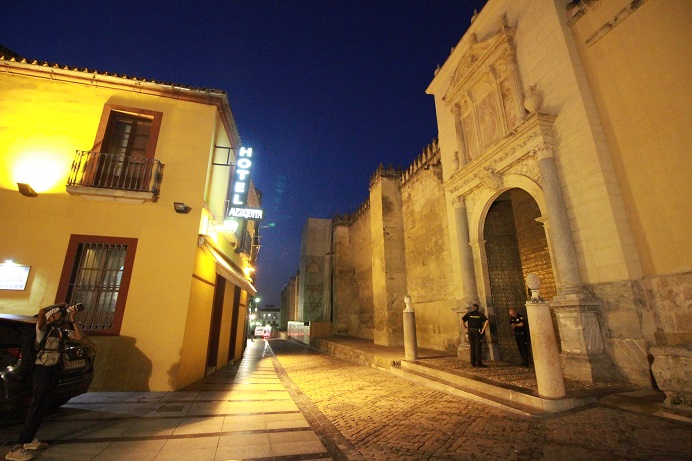

| 1 | : | Me desperté antes de las 5:00 porque todavía tenía el jet lag. |
| 2 | : | No había dormido mucho. |
| 3 | : | Ese día íbamos a movernos de Madrid a Córdoba en el tren que se llama AVE. |
| 4 | : | Teníamos una reunión con Kanako y Richard a las 6:15 en el vestíbulo. |
| 5 | : | Había café y panes gratis en el vestíbulo y tomamos un poco y salimos del hotel. |
| 6 | : | Fuimos a la estación de Atocha a pie y pasamos los controles de seguridad para entrar a la plataforma de AVE. |
| 7 | : | Subimos al tren y aunque teníamos los billetes de mesa, nuestros asientos eran normales, de primera clase. |
| 8 | : | Parecía que había habido un cambio de vehículo. |
| 9 | : | Nos dijeron que podíamos movernos, así que nos sentamos en los asientos de mesa. |
| 10 | : | El tren salió a las 7:20, a tiempo. |
| 11 | : | En los asientos de primera clase había un servicio de periódico y desayuno, como en un avión. |
| 12 | : | El desayuno era más lujoso y delicioso que el de un avión. |
| 13 | : | Pudimos pasar un momento muy elegante alrededor de la mesa. |
| 14 | : | El tren llegó a Córdoba a las 9:00 en punto de la mañana. |
| 15 | : | El centro Histórico de Córdoba está registrado como sitio Patrimonio de la Humanidad. |
| 16 | : | Pero la estación era grande y moderna. |
| 17 | : | Tomamos un taxi desde la estación y entramos al centro histórico de Córdoba en 10 minutos. |
| 18 | : | El color de muchos edificios era amarillo, parecía que estábamos en otro país. |
| 19 | : | Había muchos callejones estrechos y sinuosos, pero pudimos ir al hotel en taxi. |
| 20 | : | Nuestro hotel que se llama Hotel Mezquita, que está enfrente de una mezquita que es un destino turístico popular. |
| 21 | : | El hotel no era grande pero era bonito como un museo. |
| 22 | : | Como no era hora de registrarnos dejamos el equipaje en el hotel y fuimos a la mezquita, enfrente del hotel. |
| 23 | : | Sin embargo había una larga cola allí. |
| 24 | : | Creímos que podríamos ir a la mezquita siempre porque nuestro hotel estaba muy cerca, por eso decidimos ir a otro lugar. |
| 25 | : | Fuimos a un centro de información turística cercano. |
| 26 | : | Les preguntamos la ruta turística recomendada y nos dijeron que primero fuéramos a la mezquita. |
| 27 | : | Nos recomendaron caminar por la ciudad después de eso. |
| 28 | : | Como nos dijeron, volvimos a la mezquita. |
| 29 | : | La mezquita es una gran mezquita con un ancho de aproximadamente 130 metros y un largo de aproximadamente 180 metros con capacidad para 25,000 personas. |
| 30 | : | La construcción comenzó en el año 785 y fue expandida tres veces durante 200 años porque el número de los creyentes estaba aumentando. |
| 31 | : | La mezquita se convirtió en una iglesia cristiana después de que los cristianos reconquistaron Córdoba en el año 1,236. |
| 32 | : | En el siglo XVI una parte del edificio fue destruida para construir una catedral y, al final, se convirtió en un edificio en el que coexisten dos religiones, el Islam y el Cristianismo. |
| 33 | : | Estábamos en la cola y compramos los billetes para entrar, pagando €10.00 por persona. |
| 34 | : | Hay que comprar otro billete para subir a la torre inmediata. |
| 35 | : | Compramos los billetes para subirla a las 11:00, pagando €2.00 por persona. |
| 36 | : | Había 20 o 30 personas en un grupo y subimos las estrechas escaleras con un guía. |
| 37 | : | Kanako y Richard dijeron que había sido bueno que hubieran ido al gimnasio. |
| 38 | : | Primero la torre fue construida como una minarete de la mezquita pero los cristianos la adecuaron a las campanas y se convirtió en el campanario. |
| 39 | : | La vista desde la torre era maravillosa. |
| 40 | : | Después de salir de la torre, entramos en la mezquita. |
| 41 | : | Había decoraciones brillantes en todo el interior. |
| 42 | : | Era completamente diferente a las iglesias y mezquitas que había visto. |
| 43 | : | Parecía como un templo tailandés. |
| 44 | : | Hacía mucho calor ese día, por eso volvimos al hotel y nos registramos y descansamos un poco en la habitación. |
| 45 | : | Luego reservamos un espectáculo de flamenco en la recepción del hotel. |
| 46 | : | El billete para el espectáculo de las 20:30 costaba €23.00 cada uno. |
| 47 | : | Los cuatro salimos del hotel y cruzamos el puente romano que se llama Puente Viejo sobre el río Guadalquivir. |
| 48 | : | Fue remodelado en 2008, pero fue construido en el siglo I antes de Cristo. |
| 49 | : | Creí que el enorme puente de 331 metros había visto mucha historia. |
| 50 | : | Cruzamos otro puente y regresamos al centro histórico de Córdoba. |
| 51 | : | Entonces caminamos en la ciudad confiando en el mapa que habíamos obtenido del centro de información turística. |
| 52 | : | Pero allí también estábamos perdidos. |
| 53 | : | Usamos el GPS del teléfono inteligente de Richard y pudimos hacer turismo. |
| 54 | : | Después de las 16:00, todavía hacía calor y hacíamos turismo sin haber almorzado por eso entramos en un restaurante cercano. |
| 55 | : | Parecía que todavía estaban preparándose para abrir el restaurante pero nos recibieron con mucho gusto. |
| 56 | : | Sin embargo, nos dijeron que todavía no habían preparado comida. |
| 57 | : | Teníamos hambre, pero pedimos solo bebidas frías. |
| 58 | : | Estábamos agradecidos por descansar en un lugar fresco. |
| 59 | : | Kanako pidió agua tónica. |
| 60 | : | Yo nunca había tomado agua tónica, así que la probé. |
| 61 | : | Era agua con gas y era poco dulce y era muy refrescante y deliciosa. |
| 62 | : | Desde ese día tomaba agua tónica con cada comida. |
| 63 | : | Cada restaurante nos servía agua tónica diferente y todas estaban deliciosas. |
| 64 | : | Mientras nos estábamos relajando bebiendo refrescos, el empleado del restaurante nos llevó aceitunas y otras cosas como tapas. |
| 65 | : | Las aceitunas fueron las más deliciosas que había comido. |
| 66 | : | Miramos la cuenta y el precio de las comidas no estaba incluido. |
| 67 | : | Habían preparado las comidas gratuitas para nosotros. |
| 68 | : | Qué amables! |
| 69 | : | Pagamos casi €5 demás y les agradecimos y salimos del restaurante. |
| 70 | : | Nos impresionó la generosidad y amabilidad de los españoles y continuamos haciendo turismo. |
| 71 | : | Entramos en un área que se llama "Barrio Judío" que está en el norte de la mezquita. |
| 72 | : | Había sido un barrio judío. |
| 73 | : | Durante el gobierno islámico, los judíos fueron tratados con importancia porque los judíos habían ayudado económicamente al imperio del califa occidental. |
| 74 | : | Pero después de la reconquista, desaparecieron de la ciudad por la orden del exilio judío en el año 1,492. |
| 75 | : | Los callejones estrechos eran como laberintos y las casas tenían patios. |
| 76 | : | El paisaje en cualquier parte del área era bonito, pero especialmente un camino que se llama "El camino de flores" era un lugar para tomar fotos. |
| 77 | : | Por casualidad había una boda en ese camino. |
| 78 | : | Detrás de los novios había un camino con flores y detrás del camino estaba la torre de la mezquita. |
| 79 | : | Fue una buena oportunidad para tomar fotos. |
| 80 | : | Fuimos a un bar y tomamos tapas en los asientos al aire libre. |
| 81 | : | Era un lugar turístico popular, por eso estaba muy ocupado. |
| 82 | : | A las 20:00 fuimos al teatro de flamenco. |
| 83 | : | Había mucha gente en un lugar pequeño, como un patio de un restaurante. |
| 84 | : | Nos sentamos en las sillas pequeñas y disfrutamos del flamenco bebiendo. |
| 85 | : | Nos permitieron tomar fotos sin flash y sin vídeo. |
| 86 | : | Para mí era el primer flamenco real y fue muy poderoso y artístico. |
| 87 | : | Disfrutamos mucho del espectáculo durante casi hora y media. |
| 88 | : | Richard regresó pronto al hotel después del espectáculo para prepararse para conducir al día siguiente. |
| 89 | : | En un bar compramos unas tapas para llevar y las comimos en el hotel. |
| 90 | : | La habitación del hotel tenía una bañera, pero parecía que el diseño del baño era malo y cuando me estaba duchando, el agua fluía hacia la cama. |
| 91 | : | Pusimos las toallas en el piso y fuimos a la cama pronto. |
{kind=link}
{kind=link}
{kind=link}
{kind=link}
{kind=link}
{kind=link}
{kind=link}
{kind=link}
{kind=link}